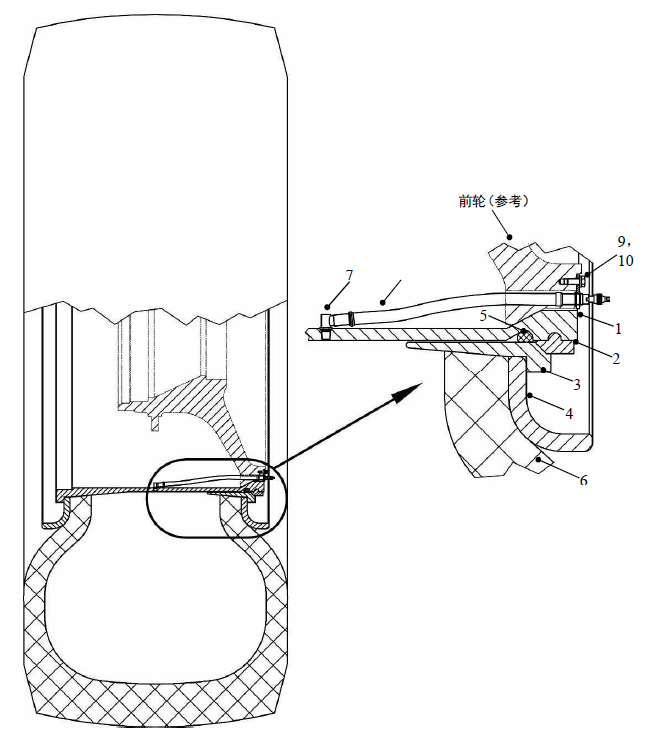
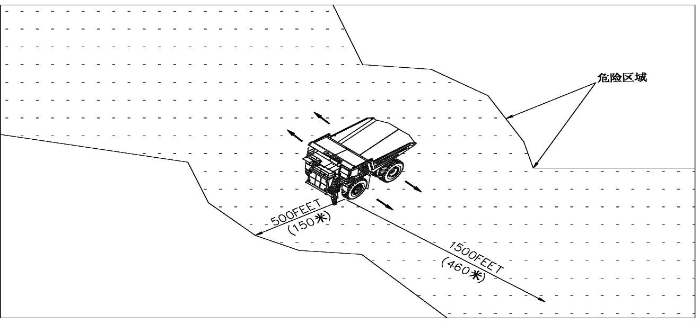
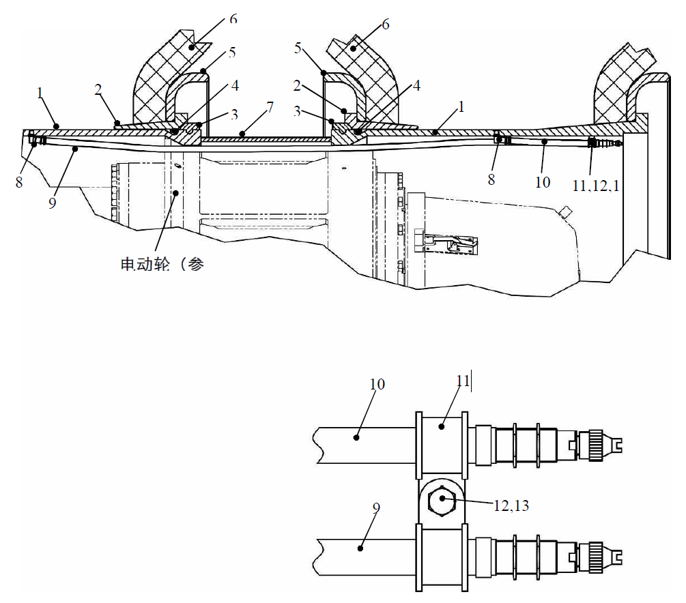

轮胎与轮辋总成. · RIM AND TYRE MTG
Спецификация
1
Обод
4
Стопорное кольцо
7
Штуцер
10
Пружинная шайба
2
Замочное кольцо
5
Кольцевое уплотнение
8
Стержень вентиля
11
Прижимная пластина вентиля
3
Беговая дорожка
6
Шина
9
Болт
Рис. 1. Передняя шина, обод и вентиль
Шина с ободом в сборе
ВАЖНО: В этом модуле описан монтаж пятиэлементного обода в сборе с шиной. Более подробную информацию о монтаже и демонтаже обода в сборе с шиной см. в соответствующих инструкциях производителей.
Описание
Резиновые шины и металлические ободья в сборе воспринимают массу карьерного самосвала. Каждая переднее колесо комплектуется одной шиной и одним ободом в сборе. Каждое заднее колесо комплектуется двойной шиной с ободом.
Управление
Резиновые шины воспринимают массу карьерного самосвала, передают тяговое усилие, тормозное усилие и рулевое усилие, а также обладают определенными амортизирующими свойствами. Более подробную информацию о типах рисунков протекторов шин см. в соответствующих инструкциях производителей.
Металлический обод крепит шину к колесу и поддерживает давление в шине. Более подробную информацию об ободьях в сборе см. в соответствующих инструкциях производителей.
Диагностика неисправностей
Для получения более подробной информации о шинах с ободьях в сборе обратитесь к производителям соответствующих компонентов или техническому и обслуживающему персоналу NHL.
Техническое обслуживание и регулировка
Периодическое техническое обслуживание должно включать следующие виды работ:
ПРЕДУПРЕЖДЕНИЕ
Следует уделять внимание безопасности при демонтаже и монтаже шин с ободьями в сборе, откачке и накачке шин, чтобы избежать серьезных травм или смертельного исходу.ВАЖНО: Существует угроза безопасности при ремонте шины с ободом, это должно выполняться обученным персоналом в соответствии с установленным порядком. Следует использовать средства индивидуальной защиты, такие как шлем, защитные наушники, защитные очки, защитная обувь и т.д., кроме того, настоятельно рекомендуется использовать правильные инструменты и оборудование.
1. Перед проведением осмотра и ухода за шиной с ободом в сборе припаркуйте в безопасном месте, следует зафиксировать карьерный самосвал при неиспользовании тормозной системы карьерного самосвала.
2. Проверить шины на наличие порезов, углубления протектора или других повреждений. Отремонтировать или заменить по мере необходимости.
3. Проверьте давление в шинах. Значения давления могут отличаться друг от друга в зависимости от нагрузок, условий окружающей среды и других факторов. Давление в шинах должно соответствовать норме, рекомендованной соответствующим производителем.
ПРИМЕЧАНИЕ:
1. Перед подкачкой убедиться в надлежащей фиксации беговой дорожки или замочного кольца.
2. Не допускается подкачка спущенной шины на карьерном самосвале. Допускается продолжение работы только после замены спущенной шины на запасное колесо или отремонтированную шину. Демонтировать шину с ободом в сборе, тщательно проверить спущенную шину с ободом в сборе в соответствии с порядком, указанным в разделе «Осмотр и ремонт» данной части.
3. Избыточная накачка шины может вызвать чрезмерную нагрузку на слои корда шины, снижение взрывобезопасности шины при столкновении, увеличение риск порезов шины камнями; недостаточная накачка шины может легко вызвать деформацию, привести к неравномерному износу рисунка шины, радиальным трещинам на боковых стенках, расслоению каркаса, ослаблению или разрушению внутренней структуры шины при эксплуатации в таких условиях.
4. Не допускайте движение карьерного самосвала под нагрузкой в том случае, если на двойном ободе только установлена одна шина. Воспринимаемое одной шиной давление значительно превышает ее несущую способность. Существует вероятность возникновения серьезного повреждения шины, даже несчастных случаев при эксплуатации в таких условиях.
5. Проверьте правильность монтажа обода в сборе, наличие/отсутствие признаков неравномерного износа или повреждений. Отремонтируйте или замените по мере надобности.
ПРЕДУПРЕЖДЕНИЕ
Не ударяйте по стальному диску или другим компонентам в том случае, если шина недостаточно или чрезмерно накачана, чтобы избежать несчастных случаев вследствие отрыва и отлета деталей обода в сборе под действием большой силы. В случае обнаружения неправильности сборки деталей, следует откачать в соответствии с указанным порядком, проводить осмотр и повторную сборку.
ВАЖНО: Если шина не демонтирована с разрешением NHL и производителя ободьев, не добавляйте, не демонтируйте и не заменяйте (в частности не нагревайте или не сваривайте) какие-либо дополнительные элементы обода.
6. Убедиться в правильности установки и затяжки шпилек и зажимов ободьев, обычно следует затянуть их до достижения момента 525-550 фут-фунтов (710-745 Н.м).
7. Убедитесь в том, что на каждом вентиле устанавливается колпачок.
ПРЕДУПРЕЖДЕНИЕ
Приближение к источнику огня/перегрев колеса может привести к угрозе взрыва шины.
Существует вероятность взрыва шины в том случае, если пахнет горящей резиной в карьерном самосвале. Если очаг возгорания карьерного самосвала распространяется на шины и колеса, шины также могут взорваться. В этом случае, как показано на рисунке, не приближайтесь к карьерному самосвалу и не входите в опасную зону, отодвиньте карьерный самосвал подальше, чтобы она не причинила вреда водителю или другим лицам.
Держитесь на расстоянии не менее 500 футов (150 м) от передней части шины и 1500 футов (460 м) от боковой части шины. Если существует необходимость приближения к аварийной шине, сделайте барьер спереди с помощью крупного бульдозера и другого оборудования, приближайтесь спереди или сзади карьерного самосвала. В случае возгорания тормозного механизма или появления запаха горящей резины, не приближайтесь к карьерному самосвалу, тушите огонь издалека, не приближайтесь с огнетушителем для тушения огня к карьерному самосвалу. Допускается приближение к карьерному самосвалу только после охлаждения шин в течение не менее 8 часов.
Снятие
Демонтаж шины с ободом в сборе производится в следующем порядке:
1. Остановить автомобиль в безопасном месте, нужно надежно удерживать карьерный самосвал в неподвижном состоянии другим подходящим методом, за исключением кроме использования тормозной системы карьерного самосвала.
ПРЕДУПРЕЖДЕНИЕ
Следует уделять внимание безопасности при демонтаже и монтаже шин с ободьями в сборе, откачке и накачке шин, чтобы избежать серьезных травм или смертельного исходу.2. Поднимите карьерный самосвал домкратом до отрыва шиш от земли. Прежде чем продолжить работу, подложите клинья под указанные места должным образом.
ПРЕДУПРЕЖДЕНИЕ
При демонтаже передней шины с ободом установите домкрат под нижнюю часть переднего моста в сборе, кроме того, используйте надежную стойку и подставку в качестве опоры, чтобы подпереть передний бампер. При демонтаже задней шины с ободом, установите домкрат под нижнюю часть посадочного места цилиндра задней подвески картера моста. Необходимо использовать надежную стойку и подставку в качестве предохранительных устройств, чтобы избежать случайного перемещения ТС.3. Полностью сбросить давление в шине. Перед ослаблением прижимов шин задних двухскатных колес следует полностью сбросить давление в двух шинах.
ПРЕДУПРЕЖДЕНИЕ
Перед ослаблением фланцевой гайки следует полностью сбросить давление в шине (до нуля). При демонтаже задней шины с ободом следует сбросить давление в двух шинах, даже если требуется отремонтировать только одну шину. Если остается давление, то существует вероятность вылета деталей обода под давлением.ПРИМЕЧАНИЕ:
1. Будьте осторожны при снятии сердечника с вентиля для сброса давления в шине, избегайте вреда от высокоскоростных воздушных потоков во время откачки.
2. В случае появления сопротивления движению потока воздуха, пусть проволоку проходит через вентиль, чтобы проверить вентиль на наличие засорения, существует вероятность случайного сброса давления в момент удаления засоров, будьте осторожны, избегайте травм от вылета проволоки.
4. Подоприте шину с ободом в сборе с помощью съемника шин, вилочного погрузчика, крана или других подходящих устройств.
ВАЖНО: Если существует необходимость демонтажа обеих шин с одного и того же заднего колеса, убедитесь в надежном подпирании двойной шины с ободом в сборе, чтобы предотвратить их случайное перемещение, демонтировать их должным образом.
5. Снять гайку фланца и зажим обода.
6. Демонтировать шину с ободом с колеса.
ПРЕДУПРЕЖДЕНИЕ
Если существует необходимость хранения пневматических шин на складе, их следует хранить в безопасных клетках.
1
Обод
4
Кольцевое уплотнение
7
Проставочное кольцо
10
Стержень вентиля
13
Пружинная шайба
2
Беговая дорожка
5
Стопорное кольцо
8
Штуцер
11
Зажим P
3
Замочное кольцо
6
Шина
9
Стержень вентиля
12
Болт
Рис. 2. Задняя шина, обод и вентиль
Разборка (см. рис. 1, 2)
Разборка шины с ободом в сборе производится в следующем порядке:
ПРЕДУПРЕЖДЕНИЕ
Следует уделять внимание безопасности при демонтаже и монтаже шин с ободьями в сборе, откачке и накачке шин, чтобы избежать серьезных травм или смертельного исходу.ПРИМЕЧАНИЕ: Для получения более подробной информации о порядке разборки и сборки шин с ободьями в сборе необходимо следовать инструкциям производителя. Нижеследующий порядок используется только для справки.
1. Убедиться в полном сбросе давление в шине и надлежащем снятии сердечника вентиля.
2. Нажмите вниз посадочное кольцо обода, снимите замочное кольцо и уплотнительное кольцо.
ВАЖНО: При снятии замочного кольца и уплотнительного кольца следует использовать подходящие инструменты, держать пальцы на безопасном расстоянии от посадочного кольца обода.
3. Отжимать беговую дорожку обода из шины.
ВАЖНО: При демонтаже шину, обод и компонентов следует использовать подъемное оборудование и механическое вспомогательное оборудование.
Проверка и ремонт
Для получения более подробной информации о порядке проведения операций необходимо следовать инструкциям производителя. Это заключается в следующем:
1. Перед повторной сборкой следует очистить все детали, чтобы проверить и правильно установить, в частности, канавка под замочное кольцо обода.
2. После очистки компонентов тщательно проверьте их на наличие коррозии, трещин, изгиба, износа или других повреждений. Замените по мере надобности; после замены снова нанести краску, чтобы предотвратить коррозию.
ВАЖНО: Ни при каких обстоятельствах не пытайтесь ремонтировать, сваривать, нагревать или запаивать обод и компоненты. Замените компонент неповрежденным новыми того же размера и типа, представленным тем же производителем. При необходимости обратитесь к производителю ободьев или ее официальному дилеру за ремонтом.
3. В случае обнаружения разгерметизации шины или чрезмерно низкого давления в шине во время движения, то нельзя ее подкачать до завершения процедуры снятия и проверки шины с ободом в сборе.
a. Проверьте корпус обода, стопорное кольцо, посадочное кольцо, замочное кольцо и уплотнительное кольцо на наличие трещин и других дефектов.
b. Перед монтажом шины должны пройти заводские испытания.
c. В процессе повторной сборки убедитесь в правильности установки всех компонентов и креплении замочного кольца в канавке под замочное кольцо в корпусе обода.
Сборка (см. рис. 1, 2)
Уставнока шины с ободом в сборе производится в следующем порядке:
1. Проверьте размеры, модели и производители всех деталей, можно начать сборку только после подтверждения правильности результатов.
ПРЕДУПРЕЖДЕНИЕ
Не смешивайте детали разных производителей или детали разных моделей одного и того же производителя.
ПРЕДУПРЕЖДЕНИЕ
Следует уделять внимание безопасности при демонтаже и монтаже шин с ободьями в сборе, откачке и накачке шин, чтобы избежать серьезных травм или смертельного исходу.2. Установить упорное кольцо на корпус обода.
3. Установить шину на обод.
4. Установить беговую дорожку и упорное кольцо на шину.
5. Нажмите вниз посадочное кольцо до тех пор, пока уплотнительное кольцо и замочное кольцо не будут установлены.
ВАЖНО: Не ударяйте металлическим молотком по ободу и компонентам, это может вызвать повреждения или деформацию обода и компонентов, привести к невозможности использования или преждевременного выходу из строя деталей. В процессе сборки слегка ударьте резиновым молотком, свинцовым молотком, пластиковым молотком или медным молотком по ненакачиваемым компонентам. Если компоненты собраны и сопряжены правильно в соответствии с требованиями конструкции, они могут быть установлены непосредственно на место без стука в процессе накачки не нужно ударить по ним и они могут быть непосредственно установлены должным образом.
ПРЕДУПРЕЖДЕНИЕ
Перед монтажом шины с ободом в сборе на колесо, не требуется накачка.Общая сборка
Уставнока шины с ободом производится в следующем порядке:
1. Поднимать шину с ободом с помощью вилочного погрузчика или грузоподъемного крана, установить ее на колесо.
2. Установить зажим обода и гайку фланца.
ПРИМЕЧАНИЕ: Более подробную информацию об установке колесных шпилек см. в разд. «Переднее колесо и электромотор-колесо в сборе» главы «Ходовая система»
3. По очереди затяните фланцевые гайки с одинаковым приращением момента затяжки под углом 180° друг к другу, не затяните их за один прием.
4. Затянуть гайки до достижения момента 525-550 фут-фунтов (710-745 Н.м).
5. Установить сердечник вентиля на стержень вентиля.
6. Установить предохранительный колпак или подобное защитное устройство на шину с ободом в сборе.
7. Накачка шины должна производиться медленно специально обученным персоналом, обычно нужно накачать до 3 фунтов на квадратный дюйм (21 кПа), а затем приостановить накачку.
ВАЖНАЯ РЕКОМЕНДАЦИЯ:
1. Устройство для накачки должно быть оснащено фильтром очистки воздуха от удаления масла, влаги и пыли из источника воздуха, эти посторонние предметы могут вызвать коррозию обода и компонентов, привести к трудной разборке или преждевременному выходу из строя деталей; следует регулярно проверять фильтр, чтобы обеспечить надлежащую функциональность.
2. Рекомендуется постоянно использовать шланг для подкачки, оснащенный манометром и клапаном регулирования давления. Данный клапан позволяет обслуживающему персоналу держаться подальше от шины во время накачки. В процессе накачки всегда держитесь подальше от шины, старайтесь не приближаться к шине, чтобы избежать несчастных случаев.
3. В процессе накачки любое лицо должно покинуть зону, где существует вероятность вылета стопорного кольца, посадочного кольца и замочного кольца.8. Снова проверять правильность установки посадочного кольца и замочного кольца. Если установка не соответствует требованиям к конструкции, сбросьте давление воздуха и повторяйте сборку. Не ударяйте по компоненту обода в процессе накачки, в противном случае это может привести к ослаблению и вылету компонента.
9. Если компоненты шины и обода установлены в хорошем состоянии при достижении давления воздуха 3 фунта на квадратный дюйм (21 кПа), то можно продолжать накачивать шину до рекомендуемого давления.
10. Опустите подъемное оборудование, чтобы опустить колеса на землю.
11. Снять оборудование для подкачки.
12. Проверьте и установите колпачок на вентиль.
13. Проверить шину на наличие разгерметизации или повреждений.
14. После первой или второй попытки работы карьерного самосвала под нагрузкой снова проверяйте торцевые гайки, кроме того, снова затягивайте до достижения требуемого момента. Несколько раз повторяйте эту процедуру до момента надежной фиксации обода.
ПРИМЕЧАНИЕ: При первой попытке работы карьерного самосвала после замены шины, внимательно наблюдайте за шиной, проверьте правильность монтажа и рабочее состояние шины. Иначе снова демонтируйте и монтируйте.
Более подробную информацию о других конструкциях см. в инструкциях производителей дополнительных элементов и соответствующих компонентов.
Шина с ободом в сборе
150-0010
Шина с ободом в сборе
150-0010
2
3
Шина с ободом– Шина с ободом в сборе
150-0010
1
Шина с ободом в сборе
150-0010
Дополнения - Масса компонентов
200-0090
6
7
Дополнения - Масса компонентов
200-0090
Переднее колесо (по образу)
500 футов
(460 м)
1500 футов
(150 м)
Опасная зона
Электромотор-колесо (пример)
Иллюстрации


